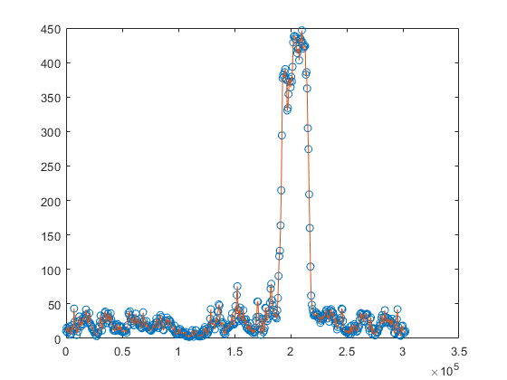

Contents
Initialisation
close all
import constants.*;
setFILE()
file = getFILE();
Working
d = file(:,1);
e = file(:,2);
L = max(d);
distance_interpolated = 0:10:L;
elevation_interpolated = interp1(d,e,distance_interpolated);
plot(d,e,'o',distance_interpolated,elevation_interpolated)
kmhr_to_ms(10)
[distance,elevation] = get_distance_and_elevation(file, 2);
[F_roll] = get_F_roll(30);
[F_aero] = get_F_aero(10);
[F_grade] = get_F_grade(20);
[F_inertia] = get_F_inertia(10);
[F_trac] = get_F_trac(10, 10, 10);
[TL_wheel] = get_TL_on_Wheels(F_trac);
Function Definitions: File Manipulation
function [] = setFILE()
global FILE
FILE = csvread(c.filename,1,0);
end
function [f] = getFILE()
global FILE
f = FILE;
end

Function Definitions: Conversions and Handlers
function [velocity_ms] = kmhr_to_ms(velocity_kmhr)
velocity_ms = velocity_kmhr/3.6;
end
function [cm] = inches_to_cm(inches)
cm = 2.54*inches;
end
function [d, e] = get_distance_and_elevation(file, index)
import constants.*;
d = file(index,1);
e = file(index,2);
end
ans =
2.7778
Function Definitions: FBD Model
function [F_roll] = get_F_roll(sigma)
import constants.*;
F_roll = c.C_roll*c.M_veh*c.g*cosd(sigma);
end
function [F_aero] = get_F_aero(V)
import constants.*;
F_aero = (1/2)*c.Rho_air*c.A_f*c.C_d*V*V;
end
function [F_grade] = get_F_grade(sigma)
import constants.*;
F_grade = c.M_veh*c.g*sind(sigma);
end
function [F_inertia] = get_F_inertia(a)
import constants.*;
F_inertia = c.M_veh*a;
end
function [F_trac] = get_F_trac(sigma, V, a)
F_trac = get_F_inertia(a) + get_F_grade(sigma) + get_F_aero(V) + get_F_roll(sigma);
end
function [TL_wheel] = get_TL_on_Wheels(F_trac)
import constants.*;
TL_wheel = inches_to_cm(c.rw)*F_trac;
end